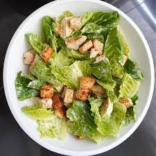
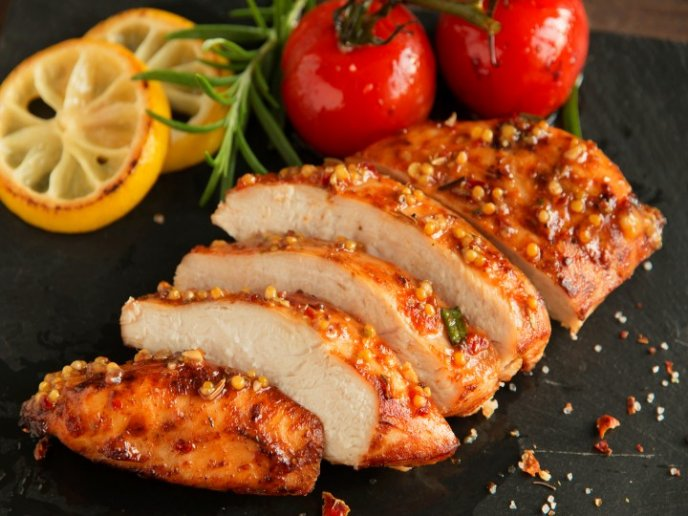

Te invitamos a conocer un poco de nuestra gastronomia... Tenemos gran variadad de los platos de las diferentes culturas del mundo y de la mas fina pasteleria.


Receta fácil con explicación detallada y fotografías de los pasos para preparar en casa un arroz frito cantonés como el de los restaurantes chinos

Si hay un clásico de la comida peruana es el lomo saltado. Nacido de la mezcla cultural entre peruanos y chinos migrantes, es un plato digno de los dioses

La cochinita pibil es un platillo tradicional de la cocina mexicana, originario de la región de la Península de Yucatán. Es especialmente popular en los estados de Yucatán, Campeche y Quintana Roo. Se trata de un platillo elaborado a base de carne de cerdo, generalmente de cerdo ibérico o cerdo de lechón, que se marina y cocina lentamente en un horno de tierra llamado “pib” o “pit”, de donde proviene el nombre “pibil”

La cochinita pibil es un platillo tradicional de la cocina mexicana, originario de la región de la Península de Yucatán. Es especialmente popular en los estados de Yucatán, Campeche y Quintana Roo. Se trata de un platillo elaborado a base de carne de cerdo, generalmente de cerdo ibérico o cerdo de lechón, que se marina y cocina lentamente en un horno de tierra llamado “pib” o “pit”, de donde proviene el nombre “pibil”

La cochinita pibil es un platillo tradicional de la cocina mexicana, originario de la región de la Península de Yucatán. Es especialmente popular en los estados de Yucatán, Campeche y Quintana Roo. Se trata de un platillo elaborado a base de carne de cerdo, generalmente de cerdo ibérico o cerdo de lechón, que se marina y cocina lentamente en un horno de tierra llamado “pib” o “pit”, de donde proviene el nombre “pibil”